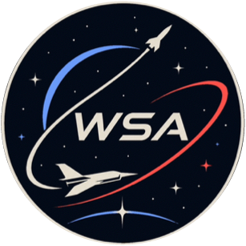

Developing reusable spacecraft, autonomous flight systems, and space infrastructure.
Aegis and Lyra families enable rapid, cost-effective spaceflight through proven recovery and reflight capability.
AutoLand is a homemade kOS guidance system that enables reliable, repeatable booster landings without external assistance.
KGOSS station provides docking, logistics, and assembly capabilities for sustained orbital operations.
FAMMOK lander program extends WSA capabilities to the Mun, Minmus, and Duna with precision landing and return.
Swift-1X, SSTO development, and atmospheric programs test flight-control concepts and reusable transportation.
WSA learns from each test, documents failures honestly, and improves designs through rigorous iteration.
Proven reusable booster family with autonomous landing. Multiple configurations tested. 47+ successful recoveries.
View Program →Next-generation reusable launcher. Three capability tiers (Selene, Sol, Astra). Lyra P-1E prototype under development.
View Program →Autonomous landing controller written in kOS. Guidance, throttle control, landing accuracy. V2.0+ development ongoing.
View Engineering →Orbital assembly hub at ~200 km orbit. Docking, logistics, crew operations, and future expansion platform.
View Station →Planetary exploration and lander development. Mun, Minmus, and Duna operations. FAMMOK-3 in planning phase.
View Missions →Swift-1X, SSTO development, and atmospheric flight-control research. High-speed and orbital-transition testing.
View Program →Booster family achieved high reliability with 47+ successful recoveries across all test campaigns. Preparing for crewed certification.
P-1E prototype integration underway. Three-tier architecture (Selene, Sol, Astra) established. First flight targeted.
Glide guidance, improved landing accuracy, and predictive targeting under active development. Test flights ongoing.
Station assembly and docking operations proven. Seraph SPC-1 "Haven" rescue capability integrated. Ready for logistics missions.
Learn more about our engineering philosophy, detailed mission records, and the systems driving our spaceflight programs.